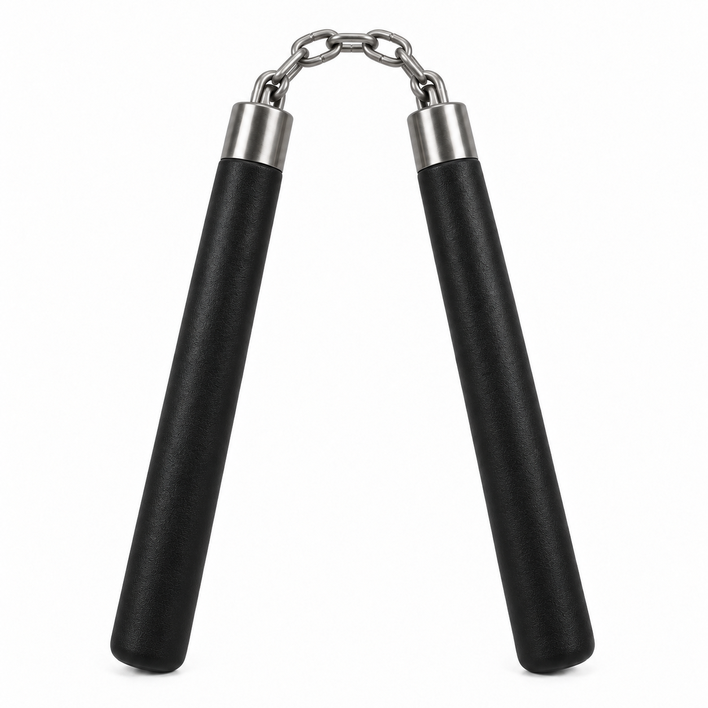

Black nunchucks
Compare the supplied reference with the modeled front view. Both images use the same square frame and scale within each view.


The final front render is not available in this folder yet. Reload after rendering finishes.
Aligned overlay
0% · reference only100% · render only
The final front render is not available in this folder yet. Reload after rendering finishes.
This model interprets one reference image. Hidden surfaces and internal attachment details are inferred. The reference has no scale marker, so absolute physical dimensions cannot be verified. The comparison shows visual correspondence rather than exact equality.